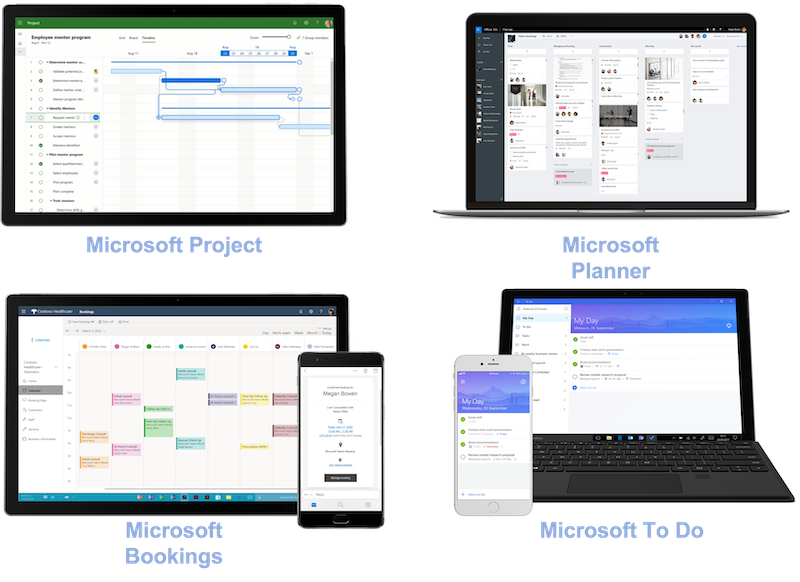

Microsoft 365 Fundamentals
INTRO TEXT HERE ...
At a Glance
At a Glance
site map
Module 1 - Describe Microsoft 365 core services and concepts
|- What is Microsoft 365?
|- Describe productivity solutions in Microsoft 365
|- Describe collaboration solutions in Microsoft 365
|- Describe endpoint modernization, management concepts, and deployment options in Microsoft 365
|- Describe analytics capabilities in Microsoft 365
|- S
|- S
|- U
|- D
|- D
|- J
|- E
Module 2 - Demonstrate fundamental knowledge of Microsoft 365 security and compliance capabilities
|- Describe security and compliance concepts
|- Describe identity concepts
|- Describe threat protection with Microsoft 365 Defender
|- Describe the Service Trust Portal and privacy at Microsoft
Module 3 - Demonstrate knowledge of Microsoft 365 licensing, service and support
|- Identify licensing options available in Microsoft 365
|- Describe support offerings for Microsoft 365 services
|- Describe the service life cycle in Microsoft 365
Introduction
Module 1 - Describe Microsoft 365 core services and concepts
What is Microsoft 365?
Microsoft 365 is a cloud-based subscription service that consists of an integrated portfolio of products like Office apps, Teams, Windows, world-class security, and more.
Microsoft 365 learns from users and collects valuable insights through the Microsoft Graph. Microsoft Graph is the gateway to data and intelligence in Microsoft 365. Collecting valuable insights helps to deliver enhanced experiences that continually get better over time and keep users protected.
Microsoft 365 has the capabilities to empower your organization to meet the diverse needs of your workers, giving them the ability to work either onsite or remotely:
- Stay connected from anywhere in the world and at any time.
- Secure sign-ins with multi-factor authentication (MFA) and built-in security features of Microsoft 365 and Windows protect against malware, malicious attacks, and data loss.
- Manage hybrid worker's devices from the cloud with security settings, allowed apps, and to require compliance with system health.
- Be collaborative and productive as on-premises in a highly collaborative way with:
Windows 365
Windows 365 isn't exactly an operating system and isn't installed on PC like Windows. Windows 365 is a subscription service for organizations that allow to create and run PCs remotely (virtual cloud PC). It’s called a cloud PC, meaning Windows 365 securely streams your personalized Windows desktop, apps, settings, and content from the cloud to any device.
Microsoft 365 subscription options
- Microsoft 365 Home: comes in two plans for family and personal use.
- Microsoft 365 Education: is available for educational institutions.
- Microsoft 365 for business: is designed for small and medium-sized organizations.
- Microsoft 365 Enterprise: is designed for large organizations, includes robust threat protection, security, compliance, and analytics features.
Microsoft 365 tenant
Go to this site for creating a sandbox Microsoft 365 environment and try out its features
Describe productivity solutions in Microsoft 365
Describe the core productivity
- Collaborate from anywhere: collaborating with the team through Teams to meet, chat, call, and collaborate in just one place
- Create content in real-time. bring ideas to life with teammates through Microsoft 365 Apps like Word, Excel, PowerPoint, and OneNote
- Create a cohesive file-sharing experience: easily share and access files from everywhere with secured OneDrive cloud storage.
- Engage and inform your organization: share files, data, news, knowledge, and resources through SharePoint.
- Stay connected: send, receive, and manage your email with Outlook. Use the built-in calendar to keep track of appointments and events.
- Work smarter with business-class email and calendaring get access to a personalized inbox and an organized way to view and interact with email, and automatically capture events onto your calendar through Exchange.
- Organize content-rich tasks: organize teamwork with intuitive, collaborative, visual task management through Planner.
- Stay on track effortlessly: easily plan your projects with the power of dynamic scheduling based on effort needed, project duration, and allotted team members through Project.
- Simplify scheduling to save time: customize appointment details, booking requirements, and specify service providers to streamline the booking experience for you and your customers through Bookings.
- Manage your to-do list: prioritize work and personal tasks and get smart suggestions for tasks through To Do.
Describe how Microsoft 365 Apps helps increase productivity

Microsoft 365 Apps is an office suite of applications such as Word, Excel, PowerPoint, OneNote, Outlook, Teams, Publisher, and Access (Publisher and Access are only available on PC).
The benefits of using Microsoft 365 apps are:
- Work across multiple devices: install Microsoft 365 apps on up to five PCs or Macs and five tablets (iPad, Windows, or Android) depending on the current plan.
- Work with apps that are always up-to-date: always be working with the most current features
- Work intelligently through connected experiences: Microsoft 365 apps include intelligent features, also called connected experiences, to help get work done faster and create amazing content, such as PowerPoint Designer, Editor in Word, or Researcher in Word.
The following list explores some of the applications included in Microsoft 365 Apps:
- Teams can help bring everyone together in one place to meet, chat, call, and collaborate
- Word can help create impressive documents and improve your writing with built-in intelligent features like Microsoft Editor and Researcher
- Excel can help simplify complex data and create easy-to-read spreadsheets and visualizations
- PowerPoint can help create polished presentations that stand out with intelligent features like Presenter Coach and PowerPoint Designer
- Outlook can help manage email, calendar, tasks, and contacts together in one place
- OneNote can help with note-taking needs by organizing your notes into tabs and subsections creating a single digital notebook
Describe work management tools in Microsoft 365
NOTE: more information here
The work management solutions through Microsoft 365 allow your teams to work the way they want, giving organizations the results they need. The work management tools available include Project, Planner, Bookings, and To Do.

-
Microsoft Project: is a powerful project management tool designed for more complex work efforts. Project for the web is Microsoft's most recent offering for cloud-based work and project management.
- Quickly kick off a project and assign tasks and schedules
- Automatically update the timeline
- Utilize the easy-to-use views such as grid views, Kanban-style task boards, and timeline Gantt charts.
- Integrate with Teams
- Create stunning interactive dashboards in Power BI
- Extensible with other platform apps and data
-
Microsoft Planner: is an intuitive, collaborative task management tool that enables people to plan, manage, and complete task-based initiatives.
- Add structure to task-based teamwork
- Assign and manage tasks on a Kanban board
- Task cards populate with various information
- Receive notifications
- Monitor your team’s progress
- Utilize the visuals such as the task board, charts page
- Integrate with Teams by adding a "Tasks by Planner" tab, use @mentions in Word, Excel, and PowerPoint
-
Microsoft Bookings: is a web-based appointment scheduling and management system. Bookings simplify the process of scheduling and managing appointments.
- Define appointment types and details, manage staff schedules
- Add buffer time between appointments
- Create a booking page where your customers and clients can schedule and reschedule appointments on their own
- Share the booking page via a direct link, your Facebook page, and link embedding within your website
- Ensure customers receive proper confirmations and reminders with automatic appointment notifications through email and SMS.
- Utilize the business-facing mobile app to view your appointments, access customer lists, and contact information, and make manual bookings on the go.
- Integrate with Microsoft Teams or Skype for Business to support virtual appointments
-
Microsoft To Do: is an intelligent task management app that makes it easy to plan and manage your day
- Focus and achieve your most important tasks
- Utilize smart suggestions to add tasks, upcoming or overdue tasks
- Get an overview of what you achieved yesterday and tasks you didn’t get to
- Create lists for any occasion and share lists with others
- Break down more complex tasks into subtasks
- Separate list of tasks generated from flagged Outlook emails
- Schedule reminders and repeatable tasks
- View your assigned tasks from Planner in To Do
Describe business class email and calendaring with Microsoft Exchange
Microsoft Exchange Online is a hosted messaging solution that delivers the capabilities of Microsoft Exchange Server as a cloud-based service. It gives users access to email, calendar, contacts, and tasks all in one place
Describe collaboration solutions in Microsoft 365
Microsoft Teams
-
Microsoft Teams is a hub for teamwork. It’s an app for people and teams to come together, stay connected, and get things done, across work, home, school, and on the go. Teams helps you pull together a team and connect with colleagues through real-time messaging and engaging and inclusive meetings.
-
Teams and channels: encourages your users to organize and collaborate across projects and workloads
- Teams encourages your users to organize and collaborate across projects and workloads. Get started by creating a team and/or channel.
- Channels are dedicated sections within a team to keep conversations organized by specific topics, projects, disciplines, or whatever works for your team.
-
Chat and instant messaging: let you work together, without cluttering up your email and keeping it clear for important messages
- Instantly connect: message a team member one on one or the entire team in a group chat. Hop on a call or share a screen for immediate feedback.
- Take conversations anywhere: record voice messages while you’re on the go, and reply to an instant chat from your mobile device
- Keep the team focused: organize your conversations, files, and apps in one place to keep the team in sync.
- Reduce email clutter: move email threads into quick chats. Share photos and documents with one person or the team.
-
Online meetings: meetings help teams to share status updates, brainstorm ideas, and solve issues together
- Microsoft Teams Phone: stay connected with voice and video calling using Microsoft Teams Phone on your computer, tablet, mobile device, or desk phone
-
Extend Teams by using collaborative apps: a solution integrated or built into Teams that enables employees to work better together, using the tools they already know
- Power BI: collaborate with data
- Power Apps: help build apps
- Power Automate: help automate tasks and processes
- Dynamics 365: provide high-level details of your customers
- Power Virtual Agents: to create chatbots
- Integrate with third-party partners and services: for more capabilities within Teams, like ServiceNow or Salesforce
-
Microsoft Viva

Microsoft Viva is an employee experience platform (EXP) that empowers people and teams to be their best, from anywhere. Viva brings together communications, insights, knowledge, learning, and resources within the flow of everyday work and collaboration.
Viva includes four modules – Viva Connections, Viva Insights, Viva Topics, and Viva Learning.
-
Viva Connections was created to keep everyone in the workforce connected to each other. It's a gateway to the employee experience, with personalized news, communications, tasks, people and resources.
- Dashboard: tools and resources your employees need, enabling quick and easy access. Uses dynamic cards that employees can interact with to do things like complete simple tasks such as time-off requests or review health checks.
- Feed: delivers updates to the right people at the right time with powerful targeting and scheduling capabilities
- Resources: enables a way to navigate across platforms
-
Viva Insights: provides privacy-protected insights and actionable recommendations that help everyone in the organization work smarter and achieve balance.
- Individuals: provide you with personal insights that only you can see. The insights will help you identify opportunities to change how you might work so that you can do your best work
- Managers: give managers the much-needed visibility into work patterns that might lead to burnout and stress. These include regular after-hours work, meeting overload, or too little focus time.
- Organizations: help company leaders address complex challenges and respond to change by shedding light on organizational work patterns and trends. Leaders can see how their work culture is affecting their organizational resiliency and boosting employee engagement. Viva Insights can provide recommendations on the outcomes page to see opportunities where a change could improve both employee experience and business outcomes.
-
Viva Topics: focuses on knowledge and expertise. It uses artificial intelligence (AI) to identify knowledge and experts and then organizes them into shared topics. Viva Topics helps to address a key business issue in many companies, which is providing information to users when they need it.
-
Viva Learning: is a centralized learning hub in Microsoft Teams that lets you seamlessly integrate learning and building skills into your day. It aggregates content from LinkedIn Learning, Microsoft Learn, third party training content, and internal content of your own all in one place
- Home: discover new content, trending content, and browse learning content libraries.
- My Learning: access your recommendations and assignments, as well as bookmarked, recently viewed, and completed courses.
- Manage: track the progress of recommendations that you made.
SharePoint
SharePoint is an intelligent intranet can help you transform employee communications and digital experiences. SharePoint is a cloud-based service that helps organizations share and manage content, knowledge, and applications to empower teamwork, quickly find information, and seamlessly collaborate inside and outside the organization.
SharePoint provides three main types of sites to help you create your intranet and foster communication and collaboration across your teams and organization:
- Team sites are collaboration sites to connect you and your team to share content and resources. Team sites provide file storage and sharing, co-authoring of documents, managing lists of information, workflow integration with Power Automate and file libraries. It can also be integrated with Microsoft Teams.
- Communication sites are designed to broadcast information to other teams or to an entire organization. These sites are perfect for sharing company news, announcements, events, internal cross-company campaigns, status updates, and product launches
- Hub sites are used to organize families of team sites and communication sites together. It provides a connection point and central portal for these groups of related team or communication sites.
OneDrive
OneDrive is a cloud-based service that enables you to access, share, and collaborate on files from anywhere
- Access files from all your devices
- Manage files on the go
- Seamless collaboration with files
- Share inside or outside your organization
- Quickly find files that matter most
- Protect your files with enterprise-grade security
Yammer
Yammer is a secure enterprise social network internal to an organization.